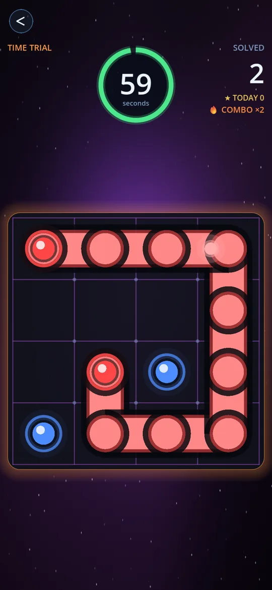
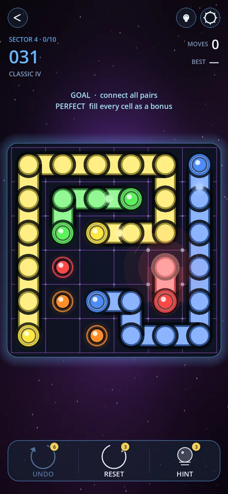

📅 26 November 2026 · ⏱ 5 min read · ✍️ Grounded Studio
Time Trial is the fast mode in Circuit Trace: one clock, a stream of puzzles and a single number at the end. It plays very differently from the level packs. Here's how it works, and what actually helps when you're chasing a better score.


Every puzzle is freshly generated, so you never get the same run twice. The first ones are over in a few seconds; the 6×6 boards are where a run is won or lost.
In the level packs you're used to covering every cell. In Time Trial that's wasted time. Connect each pair by the shortest route that doesn't block another colour, and move on.
A second spent reading the board is cheaper than a wrong line. Find the pair that's obviously next to each other or stuck in a corner, and draw that one first.
Short connections almost never get in the way. Once they're down, the long pair usually has only one sensible route left.
Solve a puzzle within 8 seconds of the previous one and the combo counter goes up. It doesn't add points, but it's a good sign you're in rhythm. If it drops, that's your cue that the boards got harder: slow down for a moment and read.
Drew a line that blocks the last pair? Drag from one of its dots and draw it again. That's quicker than trying to squeeze the last colour around it.
The early 4×4 puzzles are where you build a buffer. Every solve adds 5 seconds, but the clock never goes above 60. Fast early solves mean you reach the 6×6 boards with a full clock.
A couple of puzzles in Endless on Relaxed or Challenging gets your eyes used to reading boards before you start the clock.
Your records: the start screen shows your all-time record and your best score today. Signed in with Google Play Games? Your score also goes on the Time Trial leaderboard, and you can send a Time Trial duel to friends.
Want the general techniques behind fast solving? How to solve flow puzzles covers edges, forced moves and dead ends.
Play Circuit Trace free on Google Play and set your first Time Trial record.
You start with 60 seconds. Every solved puzzle adds 5 seconds, up to a maximum of 60, and the next puzzle loads right away. Your score is the number of puzzles you solve before the clock hits zero.
No. In Time Trial a puzzle is solved as soon as every pair is connected. Empty cells are fine.
No. Instead you can redraw a finished line straight away by dragging from one of its dots.